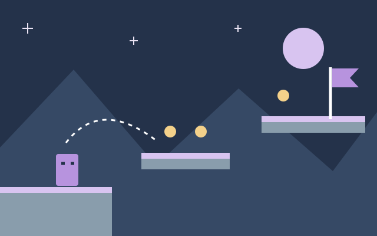
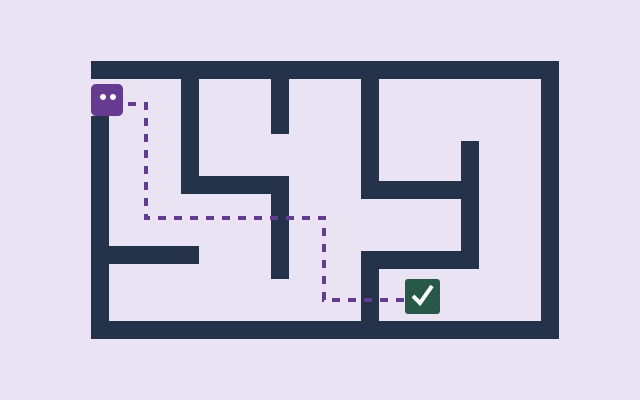
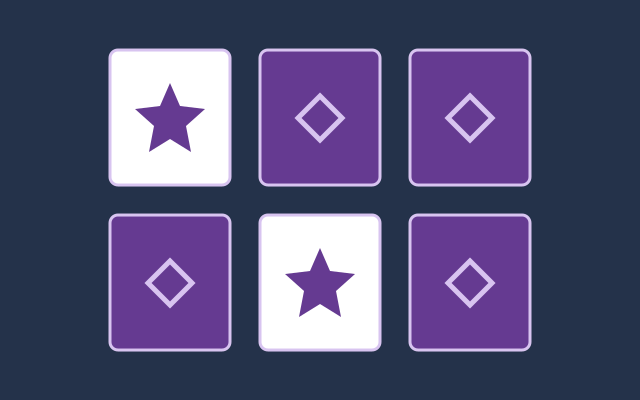

One-screen platformer
Move, jump, and reach a flag. Build one screen with a few platforms before adding enemies.
Practice: movement, gravity, and collisions.
ONE IDEA. ONE SMALL GAME.
You do not need a huge team or a huge world. Start with one action, one level, and something a player can finish.
Plan your first game Explore the tools
Indie games are made by independent creators, often working alone or in small teams. A developer may work on programming, art, sound, and design during the same project. A small team can explore a personal idea, but it also has to decide what it can realistically finish.
A game engine brings common systems together, such as drawing images, reading player input, and detecting collisions. You still decide the rules: what the player does, what makes the game interesting, and how the game ends.
These are practice ideas, not finished games. Give your first version one clear goal.
Move, jump, and reach a flag. Build one screen with a few platforms before adding enemies.
Practice: movement, gravity, and collisions.

Guide a character through one short maze. Use walls to block movement and an exit to finish the game.
Practice: input, level layout, and a win condition.

Turn over cards and find matching symbols. Start with six cards and a restart button.
Practice: arrays, comparisons, and game state.
Write down the one action that matters most. Put extra levels, online play, and upgrades on a later list. Finish the smallest playable version first.
Choose one small task for each session, such as making the character move left. Save your work and leave a note about the next step.
Test after each change. Write down how to repeat a bug. Ask someone to play without instructions and watch where they get stuck.
You can learn a lot from a tiny project. Pick one engine, follow a short introduction, and try changing a rule yourself.
Find your starting toolsI am Jose Ezequiel Flores Menendez, a software developer who enjoys video games. I recently started experimenting with small games, and I like the mix of programming and creativity. This guide shares a simple starting point for people learning alongside me.